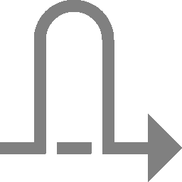
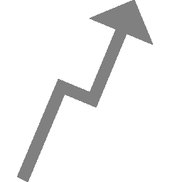
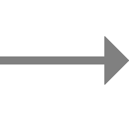
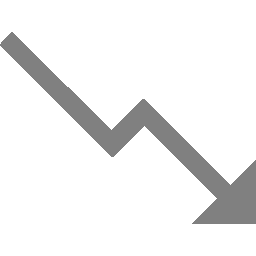
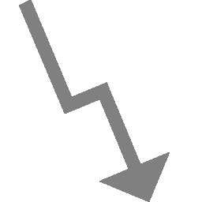

However, not all appliance models support all of these menu options.
The model overview provides information about whether a specific feature is available on the used appliance model.
The results of a scan are summarized in a report.
Reports can be displayed on the web interface and downloaded in different formats.
The appliance saves all reports of all scans in a local database.
Not only the last report of a scan is saved but all reports of all scans ever run.
This allows access to information from the past.
The reports contain the discovered vulnerabilities and information of a scan.
Once a scan has been started, the report of the results found so far can be viewed.
When a scan is completed, the status changes to Done and no more results will be added.
Report formats are defined as the formats a report is created from, based on the scan results.
Many report formats reduce the available data in order to display it in a meaningful way.
The report formats can be used to export report information into other document formats, so they can be processed by other third-party applications (connectors).
The name of the exported report is configurable in the user settings (see Chapter 7.7).
The native appliance XML format contains all data and can be used to import exported reports on another appliance.
To do so, create a container task (see Chapter 9.5).
All default report formats by Greenbone are data objects that are distributed via the feed.
They are downloaded and updated with each feed update.
Note
Report formats may be deprecated.
They are marked with (Deprecated) on the web interface, and are no longer documented in the following list.
Deprecated report formats can no longer be used.
If a report is exported in such a format, the downloaded file may be empty or otherwise not suitable for use.
If no default report formats are available, a feed update may be necessary, or the Feed Import Owner may need to be set (see Chapter 6.2.1.10.1).
Default report formats cannot be edited.
Furthermore, they can only be deleted temporarily by the Feed Import Owner or by a super administrator.
During the next feed update, they will be downloaded again.
Note
To permanently delete a default report format, the Feed Import Owner has to delete it.
Afterwards the Feed Import Owner has to be changed to (Unset) (see Chapter 6.2.1.10.1).
By default, the following report formats are available:
Anonymous XML
This is the anonymous version of the XML format.
IP addresses are replaced by random IP addresses.
ARF: Asset Reporting Format v1.0.0
This format creates a report that represents the NIST Asset Reporting Format.
CPE – Common Platform Enumeration CSV Table
This report selects all CPE tables and creates a single comma-separated file.
CSV Hosts
This report creates a comma-separated file containing the systems discovered.
CSV Results
This report creates a comma-separated file with the results of a scan.
GCR PDF – Greenbone Compliance Report
This is the complete Greenbone Compliance Report for compliance audits (see Chapter 11.2) with all vulnerabilities in graphical format as a PDF file.
The language of the report is English.
GSR HTML – Greenbone Security Report
This is the complete Greenbone Security Report with all vulnerabilities and results.
It can be opened with a web browser in which JavaScript must be enabled.
It contains dynamically sortable lists as known from the web interface.
The language of the report is English.
GSR PDF – Greenbone Security Report
This is the complete Greenbone Security Report with all vulnerabilities in graphical format as a PDF file.
The topology graph is not included if more than 100 hosts are covered in the report.
The language of the report is English.
GXCR PDF – Greenbone Executive Compliance Report
This is the shortened Greenbone Compliance Report for compliance audits (see Chapter 11.2) with all vulnerabilities in graphical format as a PDF file for management.
The language of the report is English.
GXR PDF – Greenbone Executive Report
This is the shortened Greenbone Security Report with all vulnerabilities in graphical format as a PDF file for management.
The topology graph is not included if more than 100 hosts are covered in the report.
The language of the report is English.
LaTeX
This report is offered as LaTeX source text.
The language of the report is English.
NBE
This is the old OpenVAS/Nessus report format.
It does not have support for notes, overrides and some additional information.
PDF
This is a complete report in PDF.
Like the HTML format it is neutral.
The language of the report is English.
TLS Map
This is the report format for TLS Map scans (see Chapter 11.6).
Topology SVG
This presents the results in an SVG picture.
TXT
This creates a text file.
This format is especially useful when being sent by e-mail.
The language of the report is English.
Verinice ISM
Creates an import file for the ISMS tool verinice (see Chapter 17.1).
Verinice ISM all results
Creates an import file for the ISMS tool verinice (see Chapter 17.1).
Verinice ITG (obsolete)
Creates an import file for the ISMS tool verinice (see Chapter 17.1).
Vulnerability Report HTML (recommended)
This is the new complete Greenbone Security Report with all vulnerabilities and results.
It can be opened with a web browser or HTML viewer.
The language of the report is English.
Vulnerability Report PDF (recommended)
This is the new complete Greenbone Security Report with all vulnerabilities in graphical format as a PDF file.
The language of the report is English.
Reports with this report format are limited to the first 500 results per host.
Subsequent results per host will be left out and a warning will be shown on the title page of the report.
XML
The report is exported in the native XML format.
Contrary to the other formats this format contains all results and does not format them at all.
All existing report formats can be displayed by selecting Configuration > Report Formats in the menu.
For all report formats the following information is displayed:
Name
Name of the report format.
Extension
The file name of the downloaded report consists of the UUID (unique internal ID of the report) and this extension.
Among others, the extension supports the browser to start a compatible application in case the specified content type is not recognized.
Content Type
The content type specifies the format in use and is transmitted when being downloaded.
By this, a compatible application can be launched by the browser.
Additionally, the content type is important internally:
it is used to offer suitable plug-ins within its context.
For example, when sending a report via e-mail all plug-ins of the type text/\* are offered as they can be embedded in an e-mail in a humanly readable way.
Trust
Some report formats only convert data, while others perform more complex operations and also execute programs.
To prevent abuse, each report format plug-in has to be digitally signed by Greenbone.
The digital signatures are distributed via the Greenbone Enterprise Feed.
If a signature is authentic and the publisher is trusted, it is ensured that the report format exists in the exact format as certified by the publisher.
The trust check is automatic and the result can be seen in the column Trust (Last Verified).
Active
The report formats are only available in the respective selection menus if they are activated.
Newly imported report formats are always deactivated at first. A report format can only be activated if it is trusted.
For all report formats the following actions are available:
Move the report format to the trashcan. As long as the report format is not deleted from the trashcan, it is not downloaded anew during the next feed update.
Edit the report format. Only self-created report formats can be edited.
Note
By clicking below the list of report formats more than one report format can be moved to the trashcan at a time. The drop-down list is used to select which report formats are moved to the trashcan.
Details Page
Click on the name of a report format to display the details of the report format.
Click to open the details page of the report format.
The following actions are available in the upper left corner:
Open the corresponding chapter of the user manual.
Edit the report format. Only self-created report formats can be edited.
Move the report format to the trashcan. As long as the report format is not deleted from the trashcan, it is not downloaded anew during the next feed update.
To prevent abuse, all additionally imported report formats have to be reviewed and digitally signed by Greenbone. Report formats that are not signed by Greenbone are not supported in GOS, and cannot be used.
The following details of the report configuration can be defined:
Name
Definition of the name. The name can be chosen freely.
Comment
An optional comment can contain additional information.
Report Format
Selection of the report format to be customized.
The configurable parameters depend on the selected report format.
Note
Each setting can be restored to the default value by activating the corresponding Default checkbox.
The reset to default is only done when saving the report configuration, not when activating the checkbox.
Customizable CSV Results
Formula Quoting
Selection whether the table contents should be interpreted as formulas in Microsoft Excel.
Yes: contents are not interpreted as formulas by adding a ' at the beginning of every entry that begins with =, @, + or -.
No: contents are interpreted as formulas.
The default is Yes.
Result Columns
Selection of the columns that should be included in the CSV file.
By default, the columns IP, Hostname, Port, Port Protocol, VT Name, Severity and Severity Level are included.
At least one column must be selected.
Topology SVG
Graph Type
Selection of the graph layout.
The default layout is twopi.
circo: circular layout where the nodes of biconnected components are drawn on a circle.
dot: hierarchical layout with directed graphs.
twopi: radial layout where the nodes are placed on concentric circles depending on their distance from a given root node.
Node Distance
Definition of the distance between the single nodes of the topology graph.
The node distance must be a whole number between 1 and 20.
The default value is 8.
If a number outside of the allowed range is entered, the value is set as follows:
When entering 0 and saving, the value is set to 8.
When entering a negative number and saving, the value is set to 1.
When entering a number larger than 20 and saving, the value is set to 20.
Verinice ISM/Verinice ISM all results
Attached report formats
Selection of the report format of the scan report that is imported into verinice.
Multiple report formats can be selected.
By default, no report format is selected.
ISM Control Description
Definition of a text that is attached to the report that is imported into verinice.
The field supports most UTF-8 characters and can also be left empty.
All existing report configurations can be displayed by selecting Configuration > Report Configs in the menu.
For all report configurations, the following information is displayed:
Name
Name of the report configuration.
Report Format
Report format to which the configuration applies.
For all report configurations, the following actions are available:
Move the report configuration to the trashcan.
Edit the report configuration.
Clone the report configuration.
Export the report configuration as an XML file.
Note
By clicking below the list of report configurations more than one report configuration can be moved to the trashcan. The drop-down list is used to select which report configurations are moved to the trashcan.
Details Page
Click on the name of a report configuration to display the details of the report configuration. Click to open the details page of the report configuration.
The following registers are available:
Information
General information about the report configuration.
Parameter Details
Overview of the settings selected for the customized report format.
The overview also shows the default value(s) for each setting and whether the default is used.
Fig. 10.5 Number of reports saved in total and date of the last report¶
For all reports, the following information is displayed:
Date
Date and time of report creation.
Status
Status of the corresponding task.
Task
Corresponding task.
Severity
Qualitative measure of a vulnerability’s severity according to the Common Vulnerability Scoring System (CVSS) (see Chapter 13.2.3).
This includes a severity score, which is a number from 0.0 to 10.0, with 10.0 being the most severe, and a severity class based on the score:
High: 7.0–10.0
Medium: 4.0–6.9
Low: 0.1–3.9
Log: 0.0
The highest severity detected is displayed.
High/Medium/Low/Log/False Pos.
Number of found vulnerabilities for each severity class.
For all reports the following actions are available:
Click on the date of a report to display the details of the report.
The following registers are available:
Information
General information about the corresponding scan.
Results
List of all results in this report (see Chapter 10.2.1.1).
Hosts
Scanned hosts with host names and IP addresses.
The detected operating systems, the number of found vulnerabilities for each severity and the highest severity found by the scan are displayed.
Ports
Scanned ports with port name, number of hosts and highest severity found by the scan.
Applications
Scanned applications with CPE of the application, number of hosts, number of occurrences of results that detected this CPE and highest severity found by the scan.
Operating Systems
Scanned operating systems with system name, host name, number of scanned hosts and highest severity found by the scan.
CVEs
CVEs found with the scan.
Closed CVEs
CVEs of originally detected vulnerabilities which were already confirmed as solved during the scan.
Fig. 10.6 Register Results showing a list of discovered vulnerabilities¶
Note
By default, overrides are not applied. They can be applied by filtering the report (see Chapter 10.2.1.3).
For every result the following information is displayed:
Vulnerability
Name of the found vulnerability. By clicking on the name of a vulnerability details of the vulnerability are shown (see Fig. 10.7).
The details page of the vulnerability is opened by clicking .
Vulnerabilities with an attached note are marked with .
Vulnerabilities with an attached ticket are marked with .
Vulnerabilities with an override are marked with .
Note
If the column of the vulnerability still appears empty the respective VT has not been updated yet.
Fig. 10.7 Detailed information about the vulnerability¶
Solution type
Type of measure to remedy the vulnerability.
The following solution types exist:
Vendor fix: Information is available about an official fix that is issued by the original vendor of the affected product.
Unless otherwise noted, it is assumed that this fix fully resolves the vulnerability.
Workaround: Information about a configuration or specific deployment scenario that can be used to avoid exposure to the vulnerability is available.
This is usually the “first line of defense” against a new vulnerability before a mitigation or vendor fix has been issued or even discovered.
Mitigation: Information about a configuration or specific deployment scenario that helps to reduce the risk of the vulnerability is available but that does not resolve the vulnerability on the affected product.
Will not fix: There is no fix for the vulnerability and there never will be one.
This is often the case when a product has been orphaned, is no longer maintained or otherwise deprecated.
Information should contain details about why there will be no fix issued.
None: Currently there is no fix available.
Information should contain details about why there is no fix.
Severity
Qualitative measure of a vulnerability’s severity according to the Common Vulnerability Scoring System (CVSS) (see Chapter 13.2.3).
This includes a severity score, which is a number from 0.0 to 10.0, with 10.0 being the most severe, and a severity class based on the score:
High: 7.0–10.0
Medium: 4.0–6.9
Low: 0.1–3.9
Log: 0.0
QoD
Short for “Quality of Detection”.
The QoD describes the reliability of the executed vulnerability detection.
It is a value between 0 % and 100 %, with 100 % being the most reliable.
By default, only results that were detected by VTs with a QoD of 70 % or higher are displayed.
The filter can be adjusted to show results with a lower QoD (see Chapter 7.3.1).
Host for which the result was found. The IP address and the name of the host are displayed separately.
Location
Port number and protocol type used to find the vulnerability on the host.
EPSS
Measure of a vulnerability’s likelihood of exploitation according to the Exploit Prediction Scoring System (EPSS) (see Chapter 13.2.4).
The score indicates the probability of attempts to exploit a vulnerability being observed in the next 30 days and is a number between 0 and 1.
The higher the value, the greater the probability that a vulnerability will actually be exploited.
The percentile indicates the proportion of vulnerabilities that were rated the same or lower than the vulnerability.
This helps putting the score into context.
To interpret the results note the following information:
False Positives
A false positive is a finding that describes a problem that does not really exist.
Vulnerability scanners often find evidence that point at a vulnerability but a final judgment cannot be made.
There are two cases:
False positive: reporting a potentially non-existent vulnerability.
False negative: not reporting a potentially existing vulnerability.
Since a user can identify, manage and as such deal with false positives compared to false negatives, the appliance’s vulnerability scanner reports all potentially existing vulnerabilities.
If the user knows that a false positive exists, an override can be configured (see Chapter 10.8).
Multiple findings can have the same cause.
If an especially old software package is installed, often multiple vulnerabilities exist.
Each of these vulnerabilities is tested by an individual VT and causes an alert.
The installation of a current package will remove a lot of vulnerabilities at once.
High and Medium
Findings of the severity classes High and Medium are most important and should be addressed with priority.
Before addressing Medium findings, High findings should get addressed.
Only in exceptional cases this approach should be deviated from, for example if it is known that the high level findings need to be less considered because the service cannot be reached through the firewall.
Low and Log
Findings of the severity classes Low and Log are mostly interesting for detail understanding.
These findings are filtered out by default but can hold very interesting information.
Considering them will increase the security of the network and the systems.
Often a deeper knowledge of the application is required for their understanding.
Typical for a result with the severity class Log is that a service uses a banner with its name and version number.
This could be useful for an attacker when this version has a known vulnerability.
Fig. 10.9 Composing the content of a report export¶
Activate the checkbox Notes to include attached notes, and the checkbox Overrides to label enabled overrides and include their text field content.
Note
Overrides are only considered if they are enabled when filtering the report (see Chapter 10.2.1.3).
Select the report format in the drop-down list Report Format.
If a customizable report format is selected (Customizable CSV Results, Topology SVG, Verinice ISM or Verinice ISM all results), select the report configuration in the drop-down list Report Config (see Chapter 10.1.4).
Activate the checkbox Store as default to save the settings for future exports.
Click OK.
→ The report is downloaded in the selected format.
Often an alert includes the sending of a report. The report sent by an alert is subject to a filter defined in the alert content composer (see Chapter 9.12).
Triggering an alert for a report adds a second filter originating from the scan report content composer (see Chapter 10.2.2).
The alert can be triggered manually as follows:
Select Scans > Reports in the menu.
Click on the date of a report to show the results.
Filter the report so that only the results that should be sent are displayed by using the Powerfilter (see Chapter 10.2.1.3) or selecting a register.
Note
The filter that is configured in the alert content composer (see Chapter 9.12) is applied additionally.
To mimic the behavior of this filter, adjust the filter of the report in a way that no results are filtered out.
Click .
→ The scan report content composer is opened (see Fig. 10.9).
Note
The applied filter for displaying the results is entered in the input box Filter and cannot be changed. For changing the filter see Chapter 10.2.1.3.
Activate the checkbox Notes to include attached notes, and the checkbox Overrides to label enabled overrides and include their text field content.
Note
Overrides are only considered if they are enabled when filtering the report (see Chapter 10.2.1.3).
Select the alert in the drop-down list Alert.
Tip
A new alert can be created by clicking . For the information to enter in the input boxes see Chapter 9.12.
Activate the checkbox Store as default to save the settings for future sendings of the report.
The quality of detection (QoD) is a value between 0 % and 100 % describing the reliability of the executed vulnerability detection or product detection.
While the QoD range allows to express the quality quite fine-grained, most tests use a standard methodology.
Therefore, QoD types are associate with a QoD value.
The current list of types may be extended over time.
Note
The QoD of a “Detection” result is higher than that of an actual “Vulnerability” result as it reflects the quality of the product detection itself – which is reliable – and not the quality of the related vulnerability tests which may be unreliable
for various reasons (see table).
The lowest QoD that could apply is always used, for example in case of multiple detection methods (remote or local/authenticated).
QoD
QoD Type
Description
100 %
exploit
The detection happened via an exploit and is therefore fully verified.
99 %
remote_vul
Remote active checks (code execution, traversal attack, SQL injection etc.) in which the response clearly shows the presence of the vulnerability.
98 %
remote_app
Remote active checks (code execution, traversal attack, SQL injection etc.) in which the response clearly shows the presence of the vulnerable application.
97 %
package
Authenticated package-based checks for, for example, Linux(oid) systems.
97 %
registry
Authenticated registry based checks for Microsoft Windows systems.
95 %
remote_active
Remote active checks (code execution, traversal attack, SQL injection etc.) in which the response shows the likely presence of the vulnerable application or of the vulnerability. “Likely” means that only rare circumstances are possible in which the detection would be wrong.
80 %
remote_banner
Remote banner checks of applications that offer patch level in version. Many proprietary products do so.
80 %
executable_version
Authenticated executable version checks for Linux(oid) or Microsoft Windows systems where applications offer patch level in version.
75 %
If results without any QoD information are processed (for example when migrating data from a legacy system to a currently supported system), they are assigned this value.
70 %
remote_analysis
Remote checks that perform some analysis, but may not always be completely reliable depending on environmental conditions. Narrowing down suspected false-positive or false-negative edge cases may require analysis by the user (see Chapter 10.8).
50 %
remote_probe
Remote checks in which intermediate systems such as firewalls may pretend correct detection so that it is actually not clear whether the application itself answered. For example, this can happen for non-TLS connections.
30 %
remote_banner_unreliable
Remote banner checks of applications that do not offer patch level in version identification. For example, this is the case for many open-source products due to backport patches.
30 %
executable_version_unreliable
Authenticated executable version checks for Linux(oid) systems where applications do not offer patch level in version identification.
30 %
package_unreliable
Authenticated package-based checks which are not always fully reliable for, for example, Linux(oid) systems.
1 %
general_note
General note on potential vulnerability without finding any present application.
By default, only results that were detected by VTs with a QoD of 70 % or higher are displayed.
Results detected by a test with a lower QoD are prone to false positives.
The filter can be adjusted to show results with a lower QoD (see Chapter 7.3.1).
Note
When changing the default filter to show results detected by a test with a low QoD, it is one’s own responsibility to determine if it is a false positive.
While the reports only contain the results of one single scan, all results are saved in the internal database and can be viewed by selecting Scans > Results in the menu.
Powerfilters can be used to display only interesting results (see Chapter 7.3).
Fig. 10.15 Page Results showing all results of all scans¶
For all results the following information is displayed:
Vulnerability
Name of the found vulnerability.
Vulnerabilities with an attached note are marked with .
Vulnerabilities with an attached ticket are marked with .
Vulnerabilities with an override are marked with .
Note
If the column of the vulnerability still appears empty the respective VT has not been updated yet.
Note
Even though the results contain a lot of information, external references are always listed in the details.
These refer to web pages on which the vulnerability was already discussed.
Additional background information is available such as who discovered the vulnerability, what effects it could have and how it can be remediated.
Solution type
Type of measure to remedy the vulnerability.
The following solution types exist:
Vendor fix: Information is available about an official fix that is issued by the original vendor of the affected product.
Unless otherwise noted, it is assumed that this fix fully resolves the vulnerability.
Workaround: Information about a configuration or specific deployment scenario that can be used to avoid exposure to the vulnerability is available.
This is usually the “first line of defense” against a new vulnerability before a mitigation or vendor fix has been issued or even discovered.
Mitigation: Information about a configuration or specific deployment scenario that helps to reduce the risk of the vulnerability is available but that does not resolve the vulnerability on the affected product.
Will not fix: There is no fix for the vulnerability and there never will be one.
This is often the case when a product has been orphaned, is no longer maintained or otherwise deprecated.
Information should contain details about why there will be no fix issued.
None: Currently there is no fix available.
Information should contain details about why there is no fix.
Severity
Qualitative measure of a vulnerability’s severity according to the Common Vulnerability Scoring System (CVSS) (see Chapter 13.2.3).
This includes a severity score, which is a number from 0.0 to 10.0, with 10.0 being the most severe, and a severity class based on the score:
High: 7.0–10.0
Medium: 4.0–6.9
Low: 0.1–3.9
Log: 0.0
QoD
Short for “Quality of Detection”.
The QoD describes the reliability of the executed vulnerability detection.
It is a value between 0 % and 100 %, with 100 % being the most reliable.
By default, only results that were detected by VTs with a QoD of 70 % or higher are displayed.
The filter can be adjusted to show results with a lower QoD (see Chapter 7.3.1).
Host for which the result was found. The IP address and the name of the host are displayed separately.
Location
Port number and protocol type used to find the result on the host.
EPSS
Measure of a vulnerability’s likelihood of exploitation according to the Exploit Prediction Scoring System (EPSS) (see Chapter 13.2.4).
The score indicates the probability of attempts to exploit a vulnerability being observed in the next 30 days and is a number between 0 and 1.
The higher the value, the greater the probability that a vulnerability will actually be exploited.
The percentile indicates the proportion of vulnerabilities that were rated the same or lower than the vulnerability.
This helps putting the score into context.
Created
Date and time of the report creation.
Note
By clicking below the list of results more than one result can be exported at a time. The drop-down list is used to select which results exported.
Details Page
Click on the name of a result to display the details of the result.
Click to open the details page of the result.
While the reports only contain the vulnerabilities of one single scan, all vulnerabilities are saved in the internal database and can be viewed by selecting Scans > Vulnerabilities in the menu.
Powerfilters can be used to display only interesting vulnerabilities (see Chapter 7.3).
Fig. 10.16 Page Vulnerabilities showing all vulnerabilities of all scans¶
For all vulnerabilities the following information is displayed:
Name
Title of the vulnerability.
Oldest Result
Date and time of the oldest result that was found for the vulnerability.
Newest Result
Date and time of the newest result that was found for the vulnerability.
Severity
Qualitative measure of a vulnerability’s severity according to the Common Vulnerability Scoring System (CVSS) (see Chapter 13.2.3).
This includes a severity score, which is a number from 0.0 to 10.0, with 10.0 being the most severe, and a severity class based on the score:
High: 7.0–10.0
Medium: 4.0–6.9
Low: 0.1–3.9
Log: 0.0
QoD
Short for “Quality of Detection”.
The QoD describes the reliability of the executed vulnerability detection.
It is a value between 0 % and 100 %, with 100 % being the most reliable.
By default, only results that were detected by VTs with a QoD of 70 % or higher are displayed.
The filter can be adjusted to show results with a lower QoD (see Chapter 7.3.1).
Number of results found for this vulnerability.
By clicking on the number of results the page Results is opened.
A filter is applied to show only the results for the selected vulnerability.
Note
By clicking below the list of results more than one result can be exported at a time. The drop-down list is used to select which results exported.
Details Page
Click on the name of a vulnerability to open the details page of the vulnerability.
The following actions are available in the upper left corner:
Open the corresponding chapter of the user manual.
Show the list page of all vulnerabilities.
Export the vulnerability as an XML file.
Create a new note for the vulnerability (see Chapter 10.7.1).
Create a new override for the vulnerability (see Chapter 10.8.1).
The trend describes the change of vulnerabilities between the newest and the second newest report. It is displayed in the column Trend.
The following trends are possible:
 In the newest report the highest severity is higher than the highest severity in the second newest report.
The highest severity is the same for both reports. However, the newest report contains more security issues of this severity than the second newest report.
 The highest severity and the amount of security issues are the same for both reports.
 The highest severity is the same for both reports. However, the newest report contains less security issues of this severity than the second newest report.
 In the newest report the highest severity is lower than the highest severity in the second newest report.
Remediation tickets are used to resolve the findings of vulnerabilities.
Tickets can be assigned to the current user or other users.
All valuable information to understand and resolve the problem is directly cross-linked and available for the assigned user.
Additionally, the status of a ticket helps to track the progress.
Alerts can be assigned for certain events related to tickets, for example a status change of an assigned ticket.
The ticket management system is capable of considering the repetition of scans automatically in order to verify that the problem has been solved.
Note
When creating a ticket for another user, that user gets read and write access to the ticket.
Additionally, the user automatically gets read access to the respective task and to its reports and results.
If the assignment of a ticket is withdrawn from a user, the read access to the task and the reports remains.
The permissions for a task can be checked and revoked on a task’s details page (see Chapter 9.8).
If multiple tickets are created for results of the same report and assigned to the same user, the same permission will appear multiple times.
If the assignee of a ticket is changed, the new assignee does not automatically get read access to the task.
Instead, the ticket owner must edit the permissions via the task’s details page (see Chapter 9.8) and grant read access to the new assignee.
→ The number of tickets for a result are displayed in the upper left corner of the details page of the result (see Fig. 10.19). By clicking the corresponding tickets are displayed.
The following details of the alert can be defined:
Name
Definition of the name. The name can be chosen freely.
Comment
An optional comment can contain additional information.
Event
Select Ticket Received if an alert should be sent when a new ticket is assigned to oneself.
Select Assigned Ticket Changed if an alert should be sent when the status of a ticket assigned to oneself changes.
Select Owned Ticket Changed if an alert should be sent when the status of ticket assigned to another user changes.
Method
Selection of the method for the alert. Only one method per alert can be chosen.
If different alerts for the same event should be triggered, multiple alerts must be created and linked to the same task.
The following methods are possible:
Email
An e-mail is sent to the given address.
The transmission of the e-mail can by encrypted using a configurable S/MIME or GPG key. The encryption can be selected in the drop-down list Email Encryption or created by clicking .
Start Task
The alert can start an additional task. The task is selected in the drop-down list Start Task.
System Logger
The alert is sent to a Syslog daemon.
The Syslog server is defined using the console (see Chapter 6.2.12).
All existing tickets can be displayed by selecting Resilience > Remediation Tickets in the menu.
For all tickets the following information is displayed:
Vulnerability
Vulnerability for which the ticket is created.
Severity
Severity of the vulnerability for which the ticket is created.
Host
Host on which the vulnerability was found.
Solution Type
Solution type of the vulnerability for which the ticket is created.
Assigned User
User to which the ticket is assigned.
Modification Time
Date and time of the last modification of the ticket.
Status
Status of the ticket.
For all tickets the following actions are available:
Move the ticket to the trashcan. Only the owner may move a ticket to the trashcan.
Edit the ticket.
Clone the ticket.
Note
By clicking or below the list of tickets more than one ticket can be moved to the trashcan or exported at a time. The drop-down list is used to select which tickets are moved to the trashcan or exported.
Details Page
Click on the name of a ticket to display the details of the ticket.
Click to open the details page of the ticket.
Notes allow adding comments to a VT and are displayed in the reports as well.
A note can be added to a specific result, task, severity, port or host and as such will only appear in specific reports.
A note can be generalized as well so that it will be displayed in all reports.
If a note is created through a scan result, some settings are already filled in.
NVT
VT for which the note is applied.
Active
Selection whether the note should be activated.
An activation for an arbitrary number of days is possible as well.
Hosts
Host or range of hosts for which the result must be found for the note to apply.
Tip
It is possible to enter ranges of IP addresses and CIDR blocks.
In that way, notes for entire subnets can be created without having to specify every host in a comma-separated list.
Host ranges are specified with a minus, for example 198.168.1.1-198.168.1.25. A range bigger than 4096 is not supported.
Location
Port for which the result must be found for the note to apply.
Only the following values are supported per note:
The setting Any.
A specific port supplied as a number followed by /tcp or /udp.
An unspecific port supplied as the text general/tcp.
An unspecific port supplied as the text package.
Severity
Range of severity of the VT for which the note should be applied.
Task
Selection of tasks for which the note should be applied.
Result
Selection of results for which the note should be applied.
Note
The radio button Any has to be selected if the note should be applied to reports in the future.
Text
A text that describes the note in more detail.
Click Save.
→ The note is displayed on the details page of the result (see Fig. 10.23).
It is possible to enter ranges of IP addresses and CIDR blocks in the input box Hosts. In that way, notes for entire subnets can be created without having to specify every host in a comma-separated list.
Notes can be generalized by selecting the radio button Any for hosts, locations, severities, tasks or results.
For all notes the following actions are available:
Move the note to the trashcan.
Edit the note.
Clone the note.
Export the note as an XML file.
Note
By clicking or below the list of notes more than one note can be moved to the trashcan or exported at a time. The drop-down list is used to select which notes are moved to the trashcan or exported.
Details Page
Click on the name of a note to display the details of the note.
Click to open the details page of the note.
The severity of a result can be modified.
This is called override.
Overrides are especially useful to manage results that are detected as a false positive and that have been given a critical severity but should be given a different severity in the future.
The same applies to results that only have been given the severity Log but should be assigned a higher severity locally.
This can be managed with an override as well.
Overrides are also used to manage acceptable risks.
10.8.1.1 Creating an Override Through a Scan Result¶
Overrides can be created in different ways.
The simplest way is through the respective scan result in a report:
Select Scans > Reports in the menu.
Click on the date of the report to show the results.
Select the register Results.
Click on a result in the column Vulnerability.
Click to to open the details page of the result.
Click in the upper left corner of the page.
Define the override. Select the new severity in the drop-down list New Severity (see Fig. 10.25).
Alternatively, an own new severity can be entered.
Only numbers between 0.0 and 10.0 with a maximum of one decimal place and a point as decimal separator are allowed.
If an override is created through a scan result, some settings are already filled in.
NVT
VT for which the override is applied.
Active
Selection whether the override should be activated.
An activation for an arbitrary number of days is possible as well.
Hosts
Host or range of hosts for which the result must be found for the override to apply.
Tip
It is possible to enter ranges of IP addresses and CIDR blocks.
In that way, overrides for entire subnets can be created without having to specify every host in a comma-separated list.
Host ranges are specified with a minus, for example 198.168.1.1-198.168.1.25. A range bigger than 4096 is not supported.
Note
If multiple overrides match a result, for example one override for a host range and another for a host within this range, the more specific override (going by result, task, port and severity) is applied.
If multiple, equally specific overrides match a result, the most recently created override is applied.
Location
Port for which the result must be found for the override to apply.
Only the following values are supported per override:
The setting Any.
A specific port supplied as a number followed by /tcp or /udp.
An unspecific port supplied as the text general/tcp.
An unspecific port supplied as the text package.
Severity
Range of severity of the VT for which the overrides should be applied.
New Severity
Severity the VT should have after the override is applied.
A severity class can be selected from the drop-down list.
Depending on the severity class selected, the new severity is predefined:
High: 10.0
Medium: 5.0
Low: 2.0
Log: 0.0
False Positive
Alternatively, an own new severity can be entered in the input field Other.
Only numbers between 0.0 and 10.0 with a maximum of one decimal place and a point as decimal separator are allowed.
Task
Selection of tasks for which the override should be applied.
Result
Selection of results for which the override should be applied.
Note
The radio button Any has to be selected if the override should be applied to reports in the future.
Text
A text that describes the override in more detail.
Click Save.
Note
If several overrides apply to the same VT in the same report the most recent override is used and applied.
10.8.1.2 Creating an Override on the Page Overrides¶
Overrides can be created on the page Overrides as well:
Select Scans > Overrides in the menu.
Create a new override by clicking .
Enter the ID of the VT in the input box NVT OID.
Define the override.
Note
For the information to enter in the input boxes see Chapter 10.8.1.1.
Select the new severity in the drop-down list New Severity.
Alternatively, an own new severity can be entered in the input field Other.
Only numbers between 0.0 and 10.0 with a maximum of one decimal place and a point as decimal separator are allowed.
All existing overrides can be displayed by selecting Scans > Overrides in the menu.
For all overrides the following actions are available:
Move the override to the trashcan.
Edit the override.
Clone the override.
Export the override as an XML file.
Note
By clicking or below the list of overrides more than one override can be moved to the trashcan or exported at a time. The drop-down list is used to select which overrides are moved to the trashcan or exported.
Details Page
Click on the name of an override to display the details of the override.
Click to open the details page of the override.
 Move the report format to the trashcan. As long as the report format is not deleted from the trashcan, it is not downloaded anew during the next feed update.
Move the report format to the trashcan. As long as the report format is not deleted from the trashcan, it is not downloaded anew during the next feed update. Edit the report format. Only self-created report formats can be edited.
Edit the report format. Only self-created report formats can be edited. to open the details page of the report format.
to open the details page of the report format. Open the corresponding chapter of the user manual.
Open the corresponding chapter of the user manual. Show the list page of all report formats.
Show the list page of all report formats. Add a new report format (see Chapter 10.1.3).
Add a new report format (see Chapter 10.1.3). Move the report format to the trashcan. As long as the report format is not deleted from the trashcan, it is not downloaded anew during the next feed update.
Move the report format to the trashcan. As long as the report format is not deleted from the trashcan, it is not downloaded anew during the next feed update.{kind=link}
{kind=link}
{kind=link}
{kind=link}
{kind=link}
 Clone the report configuration.
Clone the report configuration. Export the report configuration as an XML file.
Export the report configuration as an XML file.{kind=link}
 Create a delta report (see Chapter 10.2.5).
Create a delta report (see Chapter 10.2.5). in the column title shows that the objects are sorted ascending.
in the column title shows that the objects are sorted ascending. in the column title shows that the objects are sorted descending.
in the column title shows that the objects are sorted descending. Add the report contents that have at least a QoD of 70 % and enabled overrides to the assets.
Add the report contents that have at least a QoD of 70 % and enabled overrides to the assets. Remove the report contents from the assets.
Remove the report contents from the assets. Show the corresponding task.
Show the corresponding task. Open the page Results. A filter is applied to show only the results for this report.
Open the page Results. A filter is applied to show only the results for this report. Open the page Vulnerabilities. A filter is applied to show only the vulnerabilities for this report.
Open the page Vulnerabilities. A filter is applied to show only the vulnerabilities for this report. Open the page TLS Certificates. A filter is applied to show only the TLS certificates for this report.
Open the page TLS Certificates. A filter is applied to show only the TLS certificates for this report. Open the page Performance. The system performance for the scan’s duration is displayed.
Open the page Performance. The system performance for the scan’s duration is displayed. Download a filtered report (see Chapter 10.2.2).
Download a filtered report (see Chapter 10.2.2). Trigger an alert to send a report (see Chapter 10.2.4).
Trigger an alert to send a report (see Chapter 10.2.4).{kind=link}
 .
. .
.
 Vendor fix: Information is available about an official fix that is issued by the original vendor of the affected product.
Unless otherwise noted, it is assumed that this fix fully resolves the vulnerability.
Vendor fix: Information is available about an official fix that is issued by the original vendor of the affected product.
Unless otherwise noted, it is assumed that this fix fully resolves the vulnerability. Workaround: Information about a configuration or specific deployment scenario that can be used to avoid exposure to the vulnerability is available.
This is usually the “first line of defense” against a new vulnerability before a mitigation or vendor fix has been issued or even discovered.
Workaround: Information about a configuration or specific deployment scenario that can be used to avoid exposure to the vulnerability is available.
This is usually the “first line of defense” against a new vulnerability before a mitigation or vendor fix has been issued or even discovered. Mitigation: Information about a configuration or specific deployment scenario that helps to reduce the risk of the vulnerability is available but that does not resolve the vulnerability on the affected product.
Mitigation: Information about a configuration or specific deployment scenario that helps to reduce the risk of the vulnerability is available but that does not resolve the vulnerability on the affected product. Will not fix: There is no fix for the vulnerability and there never will be one.
This is often the case when a product has been orphaned, is no longer maintained or otherwise deprecated.
Information should contain details about why there will be no fix issued.
Will not fix: There is no fix for the vulnerability and there never will be one.
This is often the case when a product has been orphaned, is no longer maintained or otherwise deprecated.
Information should contain details about why there will be no fix issued. None: Currently there is no fix available.
Information should contain details about why there is no fix.
None: Currently there is no fix available.
Information should contain details about why there is no fix.{kind=link}
{kind=link}
{kind=link}
{kind=link}
{kind=link}
{kind=link}
{kind=link}

{kind=link}
 .
.
{kind=link}
{kind=link}
{kind=link}
{kind=link}
{kind=link}
{kind=link}
 Create a new note for the result (see Chapter 10.7.1).
Create a new note for the result (see Chapter 10.7.1). Create a new override for the result (see Chapter 10.8.1).
Create a new override for the result (see Chapter 10.8.1). Show the corresponding report.
Show the corresponding report.{kind=link}
{kind=link}
{kind=link}
 The highest severity is the same for both reports. However, the newest report contains more security issues of this severity than the second newest report.
The highest severity is the same for both reports. However, the newest report contains more security issues of this severity than the second newest report.{kind=link}
{kind=link}
{kind=link}
{kind=link}
{kind=link}
{kind=link}
{kind=link}
{kind=link}
{kind=link}
{kind=link}
{kind=link}
{kind=link}